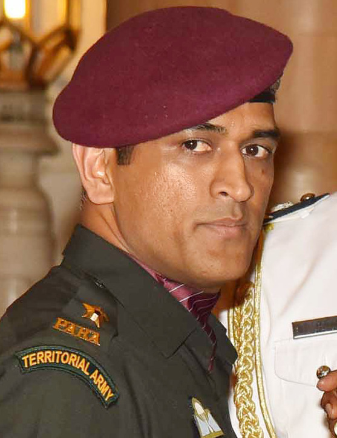

Mahendra Singh Dhoni, a highly celebrated Indian cricketer, is known for his exceptional wicketkeeping, right-handed batting, and leadership skills, having led the Indian team to victory in the 2007 T20 World Cup, 2011 Cricket World Cup, and 2013 Champions Trophy.Dhoni (born July 7, 1981, Ranchi, Bihar [now Jharkhand] state, India) is an Indian cricketer whose rise to prominence in the early 21st century culminated in his captaincy of the Indian national team that won the one-day Cricket World Cup in 2011. Dhoni made his international debut in 2004.

Mahindra Singh Dhoni
Captaincy|Batsman|Wicket keeper|Indian Soldier
Mahendra Singh Dhoni is an Indian professional cricketer who plays as a right-handed batter and a wicket-keeper. Widely regarded as one of the most prolific ...

Thala Dhoni
Ex indian captain|Ex ipl captain|No.1 Wicket keeper
In the Indian Premier League (IPL), Dhoni plays for Chennai Super Kings (CSK), leading them to the final on ten occasions and winning it five times (2010, 2011, 2018, 2021 and 2023). He has also led CSK to two Champions League T20 titles in 2010 and 2014. Dhoni is among the few batsmen to have scored more than five thousand runs in the IPL, as well as being the first wicket-keeper to do so.